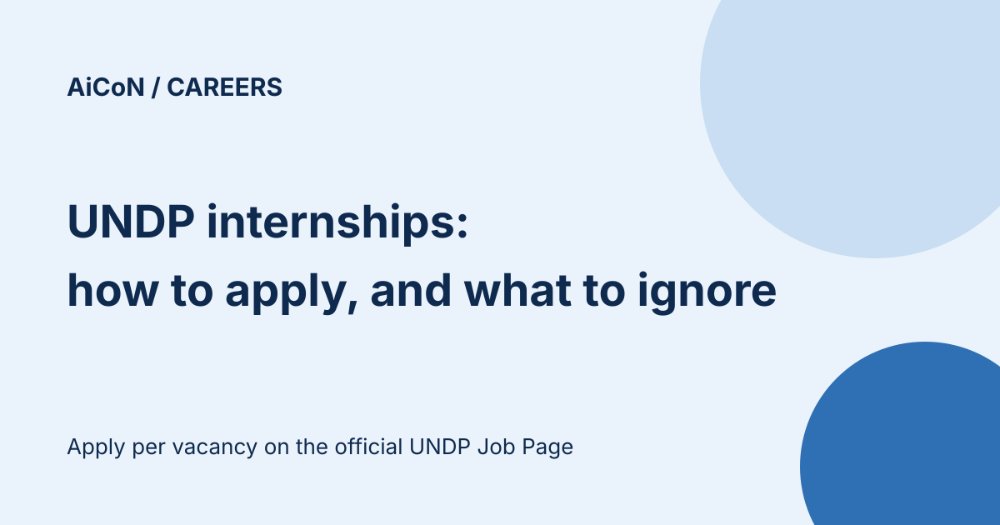

UNDP internships: how they work and how to apply (ignore the viral 2027 dates)
UNDP, the United Nations Development Programme, offers internships to students and recent graduates. There is no single national intake and no fixed "2027 Spring or Fall" calendar. Each internship is advertised on its own on the UNDP Job Page, with its own dates and terms, and you apply to each one separately.

Who can apply?
UNDP says internships are for students, meaning those completing a Master's or in the last year of a Bachelor's, and for recent graduates up to one year after graduation, who are interested in development work. Nationality limits, if any, are set per vacancy, so read each announcement.
What does an internship look like?
| Where | UNDP country offices, regional hubs or headquarters in New York. |
|---|---|
| Mode | In person or remote, as stated in the vacancy. |
| Length | Up to six months. Exceptionally nine months, when done for academic credit. |
| Pay | All interns get a monthly stipend. It varies by country of assignment and by in-person or remote. |
How to apply
- Go to the official UNDP Job Page, jobs.undp.org, and look for internship vacancies.
- Open each posting you like and read its dates, location, duties and eligibility.
- Apply to that posting. If your application is of interest, the hiring UNDP office invites you to an interview.
- Follow UNDP Careers on social media for notice of new calls, as UNDP suggests.
We did not log in or apply, and we did not check which vacancies are open today.
Related programmes that are not internships
UNDP's People Programmes page also lists Fellowships (up to 12 months), the two-year UNDP Graduate Programme for recent graduates from programme countries, and Junior Professional Officers for donor-country nationals. Each has its own rules.
Frequently asked questions
Is there a fee to apply?
UNDP states it does not charge any fee at any stage of recruitment. Treat any request for money as a scam.
Is there a set 2027 intake?
We found no fixed intake calendar. The official page says internships are advertised individually on the UNDP Job Page.
Sources: UNDP People Programmes · UNDP Job Page · UNDP Careers. Checked 8 October 2026. This is an AiCoN explainer, not a government publication.